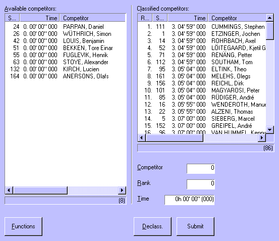
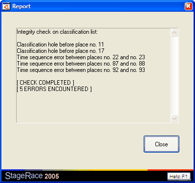

Arrival Tab Sheet
This tab sheet consists of two lists: available and classified
competitors. The list of available competitors consists of all competitors
who were not
signed out nor dropped out at the start of the particular stage.

Submit
Competitors can move from the available list to the classified
list by entering their start no. and ranking. When Submit
is clicked, the data is submitted and the competitor moves.
When the tab sheet is used for a stage arrival, additionally the ridden
time can be entered. Then you can also select one or multiple competitors
in the classified list, change their time and click Submit
again to apply the entered time to the entire selection.
Declass.
When you select one or multiple competitors in the classified list,
and you click Declass., the competitors are
moved back to the available list.
If set so in the options you can use the Del key
to declass. selected competitors from the classified list.
Time Cut
Competitors arriving after the finish deadline
are indicated in red highlighting.
The finish deadline can again be adjusted here,
because juryies often change the finish deadline on basis of what actually took
place during a half stage. The resulting time cuts
are immediatelly updated in the classified list when you change the
deadline.
Functions
A lot of attention is paid to this tab sheet, because it is going to be
used at the most critical moment of the entire event: the actual arrival.
Therefore:
- As soon as a rider is classified, automatically the ranking field
will be incremented. So when you are entering successively ranked competitors,
you only need to enter the start nos. and possibly time (after the first
competitor has been entered);
- When a rider is clicked in either
one of the two lists, its data will be copied into the edit boxes in
order to edit it quickly;
- A large number of competitors can be
entered easily by one hand only, using the numeric area of the keyboard;
- Pressing
the Enter key has the same result as clicking the Submit
button; and
- Multiple riders from the classified list
can be selected (while holding down either the Shift or the Ctrl key).
All selected riders can be declassed momentarily. Also all selected riders
can be given a new time at the same moment.
Through the Functions menu:
Check the integrity of the entered data. Gaps in the rankings as well as discrepancies
in times will be considered here. You will be shown a report of the conducted
check.

Give riders finishing in a bunch all the same time
(2.3.040). You can give
all competitors with less then 1s, 2s or 3s distance the time of that group's
leader.
Note that 1/xth seconds are taken into consideration. So, for instance: competitors
on ...05"100 and ...06"101 are considered to be more than 1s apart.
Ensure that all competitors in the classified list have consecutive
rankings, starting from one, using the current ranked order.
Round off all times in the classified list on full seconds, chopping
off the 1/xth seconds. Note that 1/xth seconds are not used for normal stages
anyway, so you do not necessarely need to do this.
Fill this arrival tab sheet on basis of an external file using the advance
import functionality.
Insert a single empty ranking position at the place of the arrival that has
the selection mark set to it. If set so in the options
you can also use the Ins key to insert a position.
Insert empty rankings at the place of the arrival that has the selection mark
set to it, in a quantity that can be chosen in the Insert empty positions
dialog.
Select all competitors at once in the classified list.

|